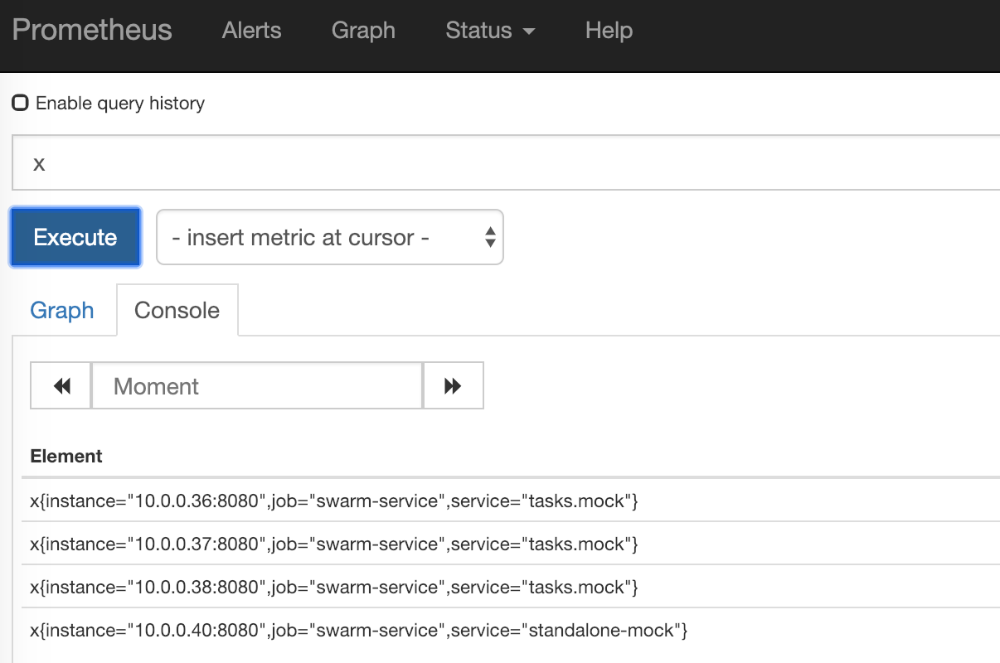

介绍如何使用Prometheus的dns service discovery机制，自动发现并抓取Docker swarm overlay网络中的容器所提供的指标。
使用docker service create/docker stack deploy能够很方便管理多个docker host，并且对应用做扩缩容。那么我们如何抓取这些动态创建的容器应用所提供的指标呢？
在《使用Prometheus+Grafana监控JVM》一文里我们使用了static_config静态配置指标抓取目标，这显然在docker swarm环境里是不合适的。我们需要一种动态发现容器的方法。
解决思路如下：
- 使用《一种生产环境Docker Overlay Network的配置方案》提到的方法配置overlay网络，并且把docker service、stack、standalone container都挂到这个overlay网络里。
- 把Prometheus也挂到这个overlay网络里。
- 使用Prometheus的DNS service discovery机制，半自动的发现容器。
本文所提到的脚本可以在这里下载
下面构建一个实验环境以说明方法。
第一步：构建overlay network
根据《一种生产环境Docker Overlay Network的配置方案》里提到的方法，创建Docker swarm，和一个overlay网络，名字叫做test-overlay：
docker network create -d overlay --attachable test-overlay第二步：启动容器
为了方便起见，使用prometheus-mock-data来模拟一个提供指标的应用，这样就能够避免繁琐的jmx-exporter。
1) 新建一个目录，名字叫做docker-swarm-demo
2) 新建一个文件scrape-data.txt，这个文件就是我们要提供的假指标，内容如下：
# HELP x mock metric
# TYPE x gauge
x 1
---
# HELP x mock metric
# TYPE x gauge
x 2
---
# HELP x mock metric
# TYPE x gauge
x 3
---
# HELP x mock metric
# TYPE x gauge
x 43) 为了演示docker service和standalone container都能被采集到，会启动这两种形式的容器：
4) 使用docker service create启动一个service，replicas=3（注意--name参数）：
docker service create \
--name mock \
--replicas 3 \
--network test-overlay \
--limit-memory 96M \
--mount type=bind,src=$(pwd)/scrape-data.txt,dst=/home/java-app/etc/scrape-data.txt \
chanjarster/prometheus-mock-data:latest4) 使用docker run启动一个standalone container（注意--name参数）：
docker run -d \
-v $(pwd)/scrape-data.txt:/home/java-app/etc/scrape-data.txt \
--network test-overlay \
--name standalone-mock \
chanjarster/prometheus-mock-data:latest第三步：启动Prometheus
1) 在之前新建目录docker-swarm-demo里创建文件prom-config.yml，内容如下：
scrape_configs:
- job_name: 'swarm-service'
scrape_interval: 30s
dns_sd_configs:
- names:
- tasks.mock
- standalone-mock
type: A
port: 8080
relabel_configs:
- source_labels: ['__meta_dns_name']
target_label: 'service'注意到上面的两个关键配置：
- 设定了两个DNS A记录，
tasks.mock和standalone-mock。tasks.mock是Docker自动为docker servicemock创建的，而standalone-mock就是容器名。文章最开始说到的半自动就是这个意思，我们得事先知道DNS A记录有哪些，然后让Prometheus去发现这些DNS A记录背后对应的容器有哪些。 - 把
__meta_dns_name的值设置到指标的service这个label里。
2) 启动Prometheus：
docker run -d \
--name=prometheus \
--network test-overlay \
-p 9090:9090 \
-v $(pwd):/prometheus-config \
-v $(pwd)/prom-data:/prometheus \
prom/prometheus --config.file=/prometheus-config/prom-config.yml3) 访问 http://localhost:9090 看看Prometheus是否启动成功，在输入框里输入x然后执行，应该可以看到如下图的结果：

其中3个instance是属于tasks.mock的，还有一个则是standalone container（如果没有看到4个instance，那么等一会儿再试）。